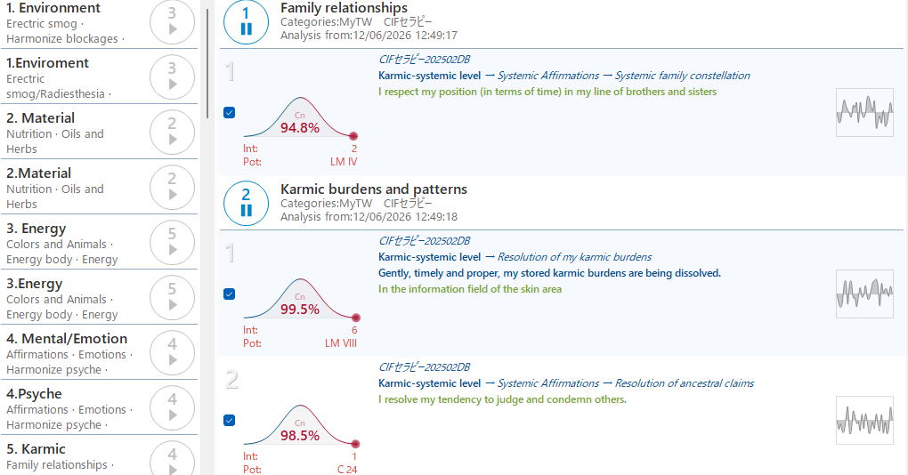
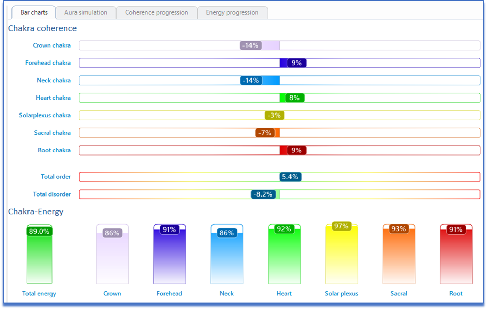
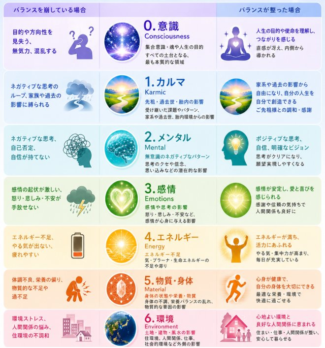

01
現状の根本原因を特定
目に見えない情報を、周波数レベルで洗い出す
- 目に見えない情報の分析：潜在意識、過去のトラウマ、家系のパターン、エネルギー的なブロックなど、顕在意識では気づけない「問題の根源」を周波数レベルで洗い出します。
- 人生のあらゆる側面を網羅：健康、仕事、人間関係、経済状況、精神性など、多岐にわたるデータベースから、あなたの現状に影響を与えている情報を特定します。
TIMEWAVER THERAPY
情報フィールドにアクセスすると、現実は驚くほどスムーズに動き出します。
セッションメニューを見るHAVE YOU EVER FELT
INFORMATION FIELD
あなたは、人生のハンドルを握っていますか？
もし、「情報フィールド」が整っていないとしたら、いくら頑張っても、現実はあなたの望む方向になかなか動いてくれません。
その原因は、「タイムウェーバー」が読み解く「目に見えない情報」にあるかもしれません。
ドイツで開発された最先端の波動調整機器「タイムウェーバー」を使用し、あなたの人生、心身、現実を形作っている「情報フィールド」に直接アクセスし、分析・調整を行います。
WHAT TIMEWAVER CAN DO
目に見えない情報を、周波数レベルで洗い出す
情報フィールドのバランスを整え、現実化をサポート


FOR YOU, IF...
私たちは何か問題が起きると、「気持ちの問題」「身体の問題」だけだと思いがちです。しかし実際には、その原因はもっと深いところにあることが少なくありません。
なかなか行動できない、人間関係がうまくいかない、同じパターンを何度も繰り返す、原因が分からない不調が続く、やる気が出ない、望む未来に進めない――こうした事象は、一つの原因ではなく、いくつもの階層が影響し合っていることがあります。
TimeWaverでは、その人全体を7つの階層から立体的に分析し、現在どこにバランスの乱れがあるのかを読み解いていきます。

CLIENT STORIES
TimeWaverを使って実際にこのような結果が出ています。
最初はオンラインで本当に分かるのか半信半疑でしたが、体調や心の状態、環境まで的確に言い当てられ、とても驚きました。
長年感じていた「理由の分からない悲しみ」も、過去からの影響だと分かり、大きな安心につながりました。原因が分かることで、対処できるようになったことがとても嬉しかったです。
また、体に合わない食材（青魚）も見抜かれ、日常の不調とのつながりに気づくことができました。セッション中はチャクラやエネルギーの変化が数値で見え、整っていく感覚を実感でき、心と時間の安定を感じられました。
心の健康診断として、定期的に受ける価値があると感じました。
安心できるやわらかな雰囲気の中で、タイムウェーバーによる明晰な解析を受けることができ、とても贅沢なセッションでした。チャクラの活性度や目標設定のレベルが、色や数値で見える化され、とても興味深く感じました。さらに、16タイプの分析からは、今後の人生やお仕事の方向性について大きなヒントをいただき、深い納得感がありました。
タイムウェーバーから提案されたアファメーションの言葉や、不思議なシンボルのイメージ、バッチフラワーや食事のアドバイスもとても印象的で、早速日常に取り入れています。
セッション後もしばらく続くエネルギーのサポートと、勧めていただいたバッチフラワーとの相乗効果もあり、この数日で情熱に火が灯ったように、ひらめきや行動力が高まってきました。なぜか翌日には道端で蛇に遭遇し、自分の転機を感じる出来事にもなりました。
タイムウェーバーのセッションは、自分の意識を超えた本来の自分に出会える特別な体験だと感じています。由利奈先生からのアドバイスも温かく愛に満ちていて、とても満たされた時間でした。心より感謝しております。ぜひ多くの方におすすめしたいセッションです。
気づけば、もう4回目？5回目？の継続セッションになります。正直に言うと――毎回、驚きの連続です。「そんなことまで分かるの？」という体験が、自然と起きていきます。
今回、セッション中に出てきたメッセージは、「左手の窓が汚れていませんか？ 拭いてあげてください。」一瞬、ドキッとしました。乱れた波動の部位を適切な時間設定でTimeWaverから調整してくれる。これ、本当に"機械"なのでしょうか？
私の実感としては、派手な奇跡ではなく、「生活の中のズレ」をそっと整えてくれる。小さな調整が積み重なって、気づけば心も空間も軽くなっている。これが、私が継続している理由です。
タイムウェーバーという桁外れな機械の性能はもとより、本当に大切なことはそれを扱いお伝えしてくれる人の方だと気付かせてくれるような貴重な体験でした。診断結果もドンピシャな内容でしたが、自分のことだけに気付けてはいるものの活かせていない…そんな気付きも改めてありました。
また一方で知らずの内に自分の宿命に沿った人生を歩んでいたと感じる面もあり、本当に経験してみて良かったと思います。他の波動体験に比べれば少しお高めの価格に見えますがコスパは最高に良い内容です。ご興味があることなら信じて経験してみる道を強くオススメ致します。
私は、タイムウェーバーを通して、本来の自分と再会することができました。これまで私は、不安や恐怖に包まれ、自分を見失い、何をしたいのかも分からない苦しい状態にいました。
しかしセッションを受けて、「自分は本来こういう存在だった」と深く腑に落ち、進むべき道が明確になりました。まるで自分の取扱説明書を受け取ったような感覚です。受けてから数ヶ月、恐怖や不安は小さくなり、日々に振り回されなくなりました。
今では、毎日が楽しく、人生が明るく変わっています。自分に優しくできるようになり、家族や周りの人との関係も自然と良いものへと変化しました。悪循環が好循環へと変わり、幸せと希望を感じながら生きられています。心から感謝しています。
QUESTIONS & ANSWERS
人の状態は、思考・感情・身体・環境などが相互に影響し合う「情報のパターン」として捉えられます。TimeWaverでは、そのパターンを分析し、バランスや偏りを可視化することで、全体の状態を把握していきます。ラジオニクスの考え方に基づき、情報の共鳴や相関をもとに読み取るアプローチです。（ラジオニクスとは、人や物が持つ見えない「情報（パターンや周波数）」を読み取り、バランスを整えるという考え方です）
無意識にある思考や感情のパターンは、自分では気づきにくいものです。それが整理されて明確になることで、認識や選択が変わり、行動が変化します。また、情報のバランスが整うことで、全体の調和がとれ、結果として現実の変化につながりやすくなります。
必須ではありませんが、状態のメンテナンス、変化の定着、次のステップへの進展などの目的で、少なくとも3回以上受けることをお勧めしています。定期的に受ける方達も多くいらっしゃいます。
THERAPIST PROFILE
神奈川県逗子市生まれ。東京都世田谷区在住。
1990年代よりNLP（神経言語プログラミング）やバッチ博士のフラワーレメディの国内での普及と教育、セラピストやトレーナーの養成等に従事。
バッチフラワーやNLP、心理に関連する分野で、講演、各種セミナーや、コーチング、コンサルティング、薬に頼らない心療内科クリニックでのセラピーなどを30年にわたって1万人以上に実践。
NLP共同創始者よりNLPマスタートレーナーの認定を受けているアジア唯一の女性である。
BEGIN YOUR SESSION
ルミナ・アカデミー 体験プログラム参加者限定企画
本日より3日間の特別価格
※本サービスは医療行為、診断、治療を目的としたものではありません。心身の状態や人生の方向性に関する気づきやサポートを提供するものであり、医療機関の代替とはなりません。体調に不安がある場合は、医師など専門機関へご相談ください。